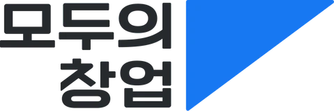

정책브리핑 · 2026.04.27

2026 NEXT WAVE-UP 아이디어 리그 · 일반·기술 트랙
말하지 못하는 입원 동물의 투약안전을 지킵니다
반려동물
주사약물 투약 관리
AIoT 솔루션
기존 링거폴대에 무게센서 모듈 하나만 걸면
잔량 · 종료시간 · 이상을 24시간 자동 기록합니다
- 수액 잔량
- 종료 예측
- 이상 알림
INFUTECHWON SHOT

1기 · 2R 확장형 상품
안녕하십니까, INFUTECH입니다. 말하지 못하는 입원 동물의 수액을, 지금 쓰는 링거폴대 그대로 지켜보는 AIoT 솔루션을 소개하겠습니다.

03:00새벽 3시, 동물병원 입원실
보호자는 집에 있고,
수의사는 다른 환자를 봅니다
다음 순회 전까지, 이 변화는
기록되지도, 확인되지도 않습니다
- 확인 공백
- 기록 공백
전남대학교 · 전북권 동물병원 설문조사 결과를 바탕으로 한 장면
새벽 3시 동물병원 입원실입니다. 보호자는 집에 있고, 당직 수의사는 다른 환자를 봅니다.
다음 순회 전까지 수액에 무슨 일이 생겨도, 기록되지도 확인되지도 않습니다. 저희가 푸는 문제는 이 두 가지, 확인 공백과 기록 공백입니다.
Problem ① 확인 공백
26.7%
4마리 중 1마리꼴로 카테터 합병증
입원한 개 · 고양이 정맥 카테터 — 빠짐 · 막힘 · 줄 끊김 · 정맥염
美 CSU 연구에서도 19.9%

그런데 24시간 지켜보는 동물병원은 서울 100곳 중 약 8곳입니다 서울 7.95% · 경기 6.53% · 야간 당직 수의사를 구하지 못해 24시간 진료를 접는 병원도 늘고 있습니다
출처: RVC·BSAVA 연구(2024, 19개 기관 382마리) · Simpson et al., J Small Anim Pract(2023) · 데일리벳 수도권 동물병원 운영시간 조사(2025) · 데일리벳 2018.07.27
숫자 하나로 시작하겠습니다. 26.7%. 입원한 개와 고양이의 정맥 카테터는 네 마리 중 한 마리꼴로 빠지거나 막히는 합병증이 생깁니다.
그런데 24시간 지켜보는 병원은 서울 100곳 중 8곳뿐입니다. 사람의 눈만으로는 밤을 지킬 수 없습니다.
Problem ② 기록 공백
기록이 없으면, 아무도 지킬 수 없습니다

동물병원 피해구제 접수 (건)
4년 새 3배 · 올해는 6월까지 45건
128건 중 반려견 68.8% · 반려묘 28.0%
진료기록 확보 여부별 분쟁 해결률
기록 있음
30%
80건 중 24건 해결
기록 없음
19.5%
41건 중 8건 해결
기록이 없으면 5건 중 4건은 해결되지 못합니다
“의사소통이 어려운 반려동물을 대상으로… 소비자가 진료 과실을 명확히 입증하기 어렵다”한국소비자원 · 2021~2026.6 접수 128건 분석
손으로 쓰는 투약 기록 → 자동으로 남는 기록이 필요합니다
출처: 한국소비자원 동물병원 피해구제 분석(2026.9, 2021~2026.6 접수 128건) · 데일리벳 2026.09.09
두 번째는 기록 공백입니다. 동물병원 피해구제 신청은 4년 만에 세 배가 됐고, 올해는 6월까지만 45건입니다.
진료기록이 있으면 30%가 해결되지만, 없으면 19.5%로 떨어집니다. 다섯 건 중 네 건은 해결되지 못합니다. 그래서 자동으로 남는 기록이 필요합니다.
Field Research 현장 인터뷰 · 실험
책상이 아니라 현장에서 듣고 만들었습니다


- 1
병원 인터뷰 · 설문전북권 병원 · 전남대
야간 공백 · 수기 기록 → 24시간 자동 기록
- 2
모의 병실 실험원광대 간호학과
흔들림 오측정 → 자이로로 편차 학습
- 3
수액 10종 테스트의료실증팀
점도별 감소 패턴 → 알고리즘 보정 성공
- 4
수의과대학 · 유통사 미팅전남대 수의대 · ㈜씨엔 · SKM&M
구매 의사 → LOI · 공급 약정 · MOU
저희는 책상이 아니라 현장에서 시작했습니다. 전북 지역 병원을 직접 찾아가 모듈을 보여 주며 인터뷰하고 레퍼런스 데이터를 모았고, 동물병원 설문에서 야간 공백과 수기 기록 문제를 확인했습니다. 이어서 원광대 간호학과와 모의 병실을 꾸려 흔들림 오측정을 자이로 데이터로 학습해 잡았습니다.
의료실증팀이 수액 10종으로 알고리즘을 보정해 테스트에 성공했고, 수의과대학과 유통사를 만나 실제 구매 의사까지 확인했습니다.
Solution 아이디어 소개
링거폴대에 모듈 하나, INFU RETRO
폴대는 그대로, 수액의 무게로 잔량 · 종료시간 · 이상을 읽습니다

SENSOR
로드셀 무게센서 1개1초마다 수액 무게 측정
HARDWARE
자체 설계 PCB60×35mm · ESP 무선 · MQTTFILTER
칼만필터 흔들림 보정움직임 · 폴대 이동 노이즈 제거
AI
CNN 이상 판별신호 패턴 분류 · 정확도 97.3%- 1걸고기존 링거 걸이에 · 공구 없이
- 2재고1초 측정 · 흔들림 보정 · 유속 계산
- 3알립니다대시보드 · 휴대폰 알림
저희 해법은 INFU RETRO, 무게센서 모듈 하나입니다. 로드셀이 1초마다 수액 무게를 재고, 칼만필터가 흔들림을 걸러내고, CNN이 정상과 이상을 판별합니다. 검증 정확도는 평균 97.3%입니다.
쓰는 법은 세 단계입니다. 기존 걸이에 걸고, 무게를 재고, 대시보드와 휴대폰으로 알립니다. 폴대 교체도, 공구도 필요 없습니다.
Core Tech 센서 절감 설계
센서는 줄이고, 학습으로 채웠습니다
기존 스마트 폴대
- 무게
- 자이로
- 가속도
- 광학
100만 원+센서를 늘려 흔들림을 잡는 구조 · 제작비
학습 단계개발 장비에서만
- 무게센서
- +
- 자이로
흔들림 ↔ 무게 편차를 학습 → 칼만필터 · CNN 보정
제품무게센서 1개 + 학습된 보정

8만 원대당 원가
97.3%판별 정확도
※ 기존 스마트 폴대 제작비는 INFUTECH 시장조사 기준 · 자이로는 개발 · 학습 장비에만 달고 제품에는 넣지 않습니다 · 신호 그림은 흔들림 구간 모의 데이터
핵심 기술입니다. 기존 스마트 폴대는 흔들림을 잡으려고 자이로, 가속도 같은 센서를 여러 개 넣습니다. 그래서 제작비만 100만 원을 넘기는 구성이 대부분입니다.
저희는 반대로 갔습니다. 학습할 때만 무게센서와 자이로를 함께 달아, 폴대가 흔들릴 때 무게가 얼마나 틀어지는지를 데이터로 모았고, 그 편차를 칼만필터와 CNN이 스스로 보정하도록 학습시켰습니다.
그래서 제품에는 무게센서 하나만 들어갑니다. 대당 원가 8만 원, 판별 정확도 97.3%입니다.
Validation 검증 성과
흔들리는 모의 병실에서, 숫자로 증명했습니다
±3%
잔량 측정 오차
500 mL · 이동 · 흔들림 반복
±5분
종료시점 예측 오차
초기 감소량 + 방울 수(GTT)
5초
이내 이상 감지
흔들림 보정 포함 최대 시간
97.3%
CNN 검증 정확도
최근 6 epoch 평균 · 95.2~99.0%
수액 10종 보정점도별 감소 패턴으로 테스트 성공


학술 발표 논문 2편국내 공동학술대회 · AIT 2026
특허 3건 심사 중하드웨어 · 소프트웨어 · 실용신안
※ 모의 병실 반복시험(폴대 이동 · 흔들림 · 기울어짐 · 당겨짐, 500 mL) · ±5분 · 5초는 보정을 포함한 최대 검측 시간 기준
흔들리고 기울어지는 모의 병실에서 반복 시험했습니다. 잔량 오차 ±3%, 종료시점 예측 오차 ±5분, 이상 감지 5초 이내, 패턴 검증 정확도는 최근 여섯 번 학습 평균 97.3%입니다.
점도가 다른 수액 10종으로 알고리즘을 보정해 테스트에 성공했고, 논문 2편으로 발표했으며 특허 3건이 심사 중입니다.
Regulation 차별점 · 인허가
사람용 의료기기 허가 없이, 동물병원에 바로 공급합니다
사람 병원용 수액 기기
- 관할식약처 · 「의료기기법」
- 절차1등급 신고 · 2등급 인증 · 3 · 4등급 허가
- 심사기술문서 · 임상자료
동물 전용 기기 · INFU RETRO
- 관할농림축산검역본부 · 의료기기법 제46조 특례
- 절차1등급 신고 · 2~4등급 허가
- 1등급동물에 닿지 않거나 위험이 거의 없는 기기
INFU RETRO 구조 확인
동물 몸에 닿지 않음폴대와 수액백 사이에서 무게만
주입을 제어하지 않음기존 수액세트 · 클램프 그대로
동물병원 전용사람 병원 판매 대상 아님
사람용 허가 대상 아님 · 동물용 1등급 기준에 맞는 구조
KC 인증(전기 · 전파) 병행특허 3건 심사 중
근거: 「의료기기법」 제46조(동물용 의료기기 특례) · 농림축산검역본부 「동물용의료기기의 범위 및 분류 등에 관한 규정」(고시 제2021-36호) · 데일리벳 2013.08(동물용 의료기기 등급별 신고 · 허가제, 2014.1 시행) · 최종 품목 등급은 검역본부 분류표로 확인
인허가 장벽도 낮습니다. 동물 전용 의료기기는 의료기기법 특례에 따라 식약처가 아니라 농림축산검역본부 소관이고, 가장 낮은 1등급은 허가가 아니라 신고입니다.
INFU RETRO는 동물 몸에 닿지 않고 주입도 제어하지 않는, 수액 무게만 재는 장치입니다. 1등급 기준에 맞는 구조라 사람용처럼 긴 허가 심사 없이 공급할 수 있습니다. KC 인증과 특허 3건도 함께 진행 중입니다.
Traction MOU 체결 현황
구매의향과 공급 약정, 문서로 확인했습니다
구매의향서 (LOI)
전남대학교 수의과대학광주 · 전남 실증 거점 · 진입 전략 STEP 2
- 내용INFU RETRO 구매의향(LOI) 체결
물품공급 및 판매 약정


㈜씨엔전남 순천 · 회원사 대상 공급
- 체결2026.08.19 · 2년
- 규모17만 원 × MOQ 300개
구매의향 · 사업협력 MOU


㈜에스케이엠엔엠SKM&M · 의료기기 생산 · 유통
- 체결2026.10.11
- 규모5,000만 원 구매의향 · 판로 지원
다음 단계제품 생산 · 인증을 마치면 수량 · 단가 · 납기를 정해 본계약으로 전환합니다
판로는 문서로 확인했습니다. 전남대학교 수의과대학과 구매의향서를, 8월에는 ㈜씨엔과 최소 300개 공급 약정을, 10월에는 의료기기 유통사 SKM&M과 5,000만 원 규모 구매의향 MOU를 맺었습니다.
Go-to-Market 시장 진입 전략
전북에서 증명하고, 전국 5,312곳으로
TAM · 전국 동물병원5,312곳
SAM · 호남권약 300곳
SOM · 3년50곳 · 250대
STEP 1
전북 실증
전북지역 병원 인터뷰 대학 인접 일반 · 24시 동물병원에서 레퍼런스 확보
원광대 간호학과 실험 협력
STEP 2
광주 · 전남 확대
전남대 수의대 · 동물병원 연계, 입원 데이터 고도화
전남대학교 수의과대학 LOI · ㈜씨엔 공급 약정
STEP 3
전국 B2B
대학병원 · 24시 센터 사례로 전국에 공급
㈜에스케이엠엔엠 의료기기 유통망 MOU
출처: 수의미래연구소 집계(농식품부 자료, 2025.6 전국 동물병원 5,312곳) · SAM · SOM은 아이디어 제안서 자체 추정
전국 동물병원 5,312곳 중 호남권 300곳을 먼저 공략해, 3년 안에 50곳 250대가 목표입니다.
이미 병원 인터뷰로 레퍼런스 데이터를 모으고 있는 전북에서 실증하고, 전남대 수의과대학을 거점으로 광주 · 전남으로, 유통사 MOU로 전국에 공급합니다.
Impact 기대효과
순회는 줄이고, 먼저 알아챕니다
사람 병원에서 먼저 확인된 효과
−2.06회
근무조당 병실 확인 방문원격 수액 모니터링 · 핀란드 6개 병원 · 간호사 응답 216건
2.12분
이상 알림 후 평균 대응IoT 수액 모니터링 · 中 대학병원 2개 병동 · 도입 전후 1년
- 동물병원
순회 · 수기 기록 부담 ↓
−77%도입비 (펌프 대비)
- 보호자
시간별 투약 기록 → 신뢰
24시간자동 기록
- 반려동물
소진 · 중단 · 유속 이상 조기 발견
5초이내 감지
출처: Puolitaival et al., Advances in Therapy(2022) — 근무조당 5.05분 확보 · 간호사 56.3% 시간 절약 응답(자기보고 설문) · Tong et al., Frontiers in Medicine(2025) — 수액 합병증 감소 · 정시 완료율 향상

사람 병원에서는 효과가 먼저 확인됐습니다. 핀란드 6개 병원에서 원격 수액 모니터링을 쓴 간호사들은 근무조당 병실 확인 방문이 2회 줄었다고 답했고, 중국 대학병원에서는 이상 알림 뒤 평균 2분 만에 대응했습니다.
동물병원은 순회와 기록 부담을 덜고, 보호자는 남는 기록으로 신뢰를 얻고, 반려동물은 이상을 먼저 발견합니다.
Team 팀 소개
개발과 의료 실증, 두 축으로 움직입니다
개발팀하드웨어 · 펌웨어 · AI · 서버
 권용현CEO · Engineer
권용현CEO · Engineer 정익상Engineer
정익상Engineer 한우진Developer
한우진Developer 최이지Developer
최이지Developer
의료실증 · 임상 테스트모의 병실 · 현장 실증
 김은강Clinical Tester
김은강Clinical Tester 한예린Medical Validation
한예린Medical Validation 한별Field Demonstration
한별Field Demonstration
- 원광대 간호학과 실험 협력
- 전남대학교 수의과대학 LOI
- 수액 10종 보정 테스트
- 특허 3건 심사 중
개발팀 네 명이 하드웨어와 AI, 서버를 맡고, 의료실증팀 세 명이 모의 병실과 현장 시험을 맡습니다. 현장 실험과 보정 테스트를 직접 해 온 팀입니다.
INFUTECHWON SHOT
감사합니다
말하지 못해도, 먼저 알아챕니다
입원 동물의 수액, INFUTECH가 지켜보겠습니다
말하지 못해도, 먼저 알아채겠습니다. 입원 동물의 수액, INFUTECH가 지켜보겠습니다. 감사합니다.
Appendix 핵심 알고리즘
통계식 대신, CNN이 이미지 패턴으로 판별합니다
01
무게 수집
1초 간격 로드셀 측정
02
칼만필터
동물 움직임 · 폴대 흔들림으로 생긴 순간 노이즈 제거
03
유속 산출
투여 초기 무게 감소량과 방울 수(GTT)로 투여속도 추정
04
CNN 이미지 패턴
시계열을 이미지 패턴으로 바꿔 정상 · 이상 분류
CNN 학습 곡선 손실 · 정확도 — 기존 개발 결과
테스트 환경에서는 자이로로 흔들림 ↔ 무게 관계를 학습해 보정합니다. 실제 제품에는 무게센서 하나만 들어갑니다.
검증 정확도 (val_acc) · 최근 6 epoch
97.3%
| Epoch 62/80 | loss 0.0878 | 95.66% |
|---|---|---|
| Epoch 63/80 | loss 0.0564 | 99.00% |
| Epoch 64/80 | loss 0.0943 | 95.24% |
| Epoch 65/80 | loss 0.0507 | 97.29% |
| Epoch 66/80 | loss 0.0748 | 97.41% |
| Epoch 67/80 | loss 0.0346 | 99.00% |
수액 10종의 점도별 무게 감소 패턴으로 보정
질의응답용: 네 단계 파이프라인과 CNN 학습 로그입니다. 97.3%는 마지막 6 epoch 검증 정확도의 평균이고, 범위는 95.2~99.0%입니다.
Appendix 하드웨어 · 통신
무게센서 하나로 끝내는 자체 설계 PCB
ADS1232 앰프무게센서 신호 직접 처리
제품 센서 1개무게센서만 탑재 (자이로는 학습용)
ESP 무선 일체형USB-C · 로드셀 4핀
MQTT 이벤트 전송트래픽 80% 이상 감소
질의응답용: 60×35mm 자체 PCB에 무게센서 하나만 올렸고, 이벤트 전송으로 트래픽을 80% 이상 줄였습니다.
Appendix 학술 발표 논문
상태 패턴 분석 기반 정맥 수액 이상 감지 알고리즘
발표 논문
- 국내CNN 상태 패턴 분석 기반 정맥 수액 이상 감지 알고리즘 — 한국혁신산업학회 · 한국디지털정책학회 공동학술대회 (2026.07)
- 국제Design of a Dual-Track Algorithm for Real-Time IV Monitoring Based on Load Cell — AIT 2026 (2026.01)
쪽을 누르면 전문을 크게 볼 수 있습니다
질의응답용: 국내 학회 발표 논문 전문입니다.
Appendix 공급 약정서 전문
㈜씨엔 물품공급 및 판매 약정서
핵심 조항
- 체결2026.08.19
- 품명INFU RETRO · INFU MINI (금형 · 사출조립 완제품)
- 가격170,000원 / 300개 MOQ 기준
- 기간2년, 이의 없으면 1년씩 연장
쪽을 누르면 전문을 크게 볼 수 있습니다
질의응답용: ㈜씨엔과 맺은 물품공급 및 판매 약정서 전문입니다.
Appendix 업무협약서 전문
㈜에스케이엠엔엠 구매의향 · 사업협력 MOU
핵심 조항
- 체결2026.10.11
- 대상수액관리 스마트링거폴대
- 규모총 5,000만 원 규모 구매의향 (부가세 별도)
- 협력유통망 · 시장 정보로 판로 확보와 홍보 지원, 현장 의견 반영
- 본계약생산 · 인허가 완료 후 수량 · 단가 · 납기 확정
쪽을 누르면 전문을 크게 볼 수 있습니다
질의응답용: ㈜에스케이엠엔엠과 맺은 구매의향 및 사업협력 업무협약서 전문입니다.